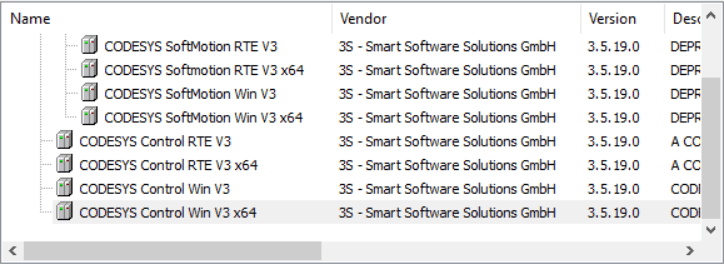

codesys 运行时调用外部G代码文件的编程路径
在下载到真实设备上和 simulation 模式时，调试时需要引用的路径是不一样的。
不管是哪种模式下，codesys 本身运行的一个容器环境根目录是如下：
PlcLogic 文件夹是 POU 运行的根目录，所有 G 代码文件的索引都是以此目录为根目录的。在程序中定义路径地址的时候只需要写 POU 根目录的子路径即可。
simulation 模拟
在电脑上进行运动控制模拟时，如果需要调用外部G代码程序，模拟环境下的程序运行根目录为 C:\ProgramData\CODESYS\Simulation\PlcLogic\。
将G代码程序文件放入上述目录下使用即可调用，如：
strFileName : STRING(120) := 'NCReadFromFile.txt';一般可以新建一个子路径 _cnc 将程序都放入其中：
strFileName : STRING(120) := '_cnc/NCReadFromFile.txt';注意每次重启 codesys IDE 会重置 C:\ProgramData\CODESYS\Simulation\PlcLogic\ 目录，需要重新复制程序进来。
真实设备
首先需要知道工控机安装的是什么类型的控制器：

information 菜单下可以查看当前控制器类型：
windows 下 codesys runtime 安装路径为：C:\ProgramData\CODESYS，目录中包含所有已经安装的各种类型的控制器，每个控制器类型都有其单独目录：
进入需要的控制器目录后，就可以看到运行 codesys 的容器文件夹了：
这个文件夹就是 codesys 在控制器上的运行环境，
只需要将 G 文件放入 PlcLogic 文件夹下，同时 POU 中路径只需要定义此根路径的子目录即可。
也可以通过 IDE 在线传输文件到控制器指定目录：
标签：无